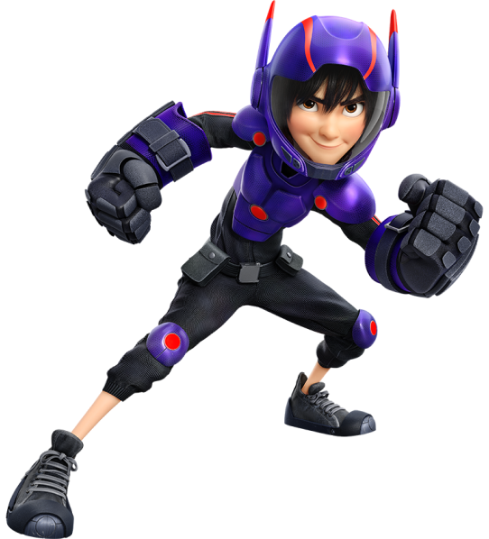

HERO HAMADA
Hiro Hamada é um jovem prodígio da robótica que lidera um grupo de heróis para combater um vilão mascarado, usando um traje de alta tecnologia que ele mesmo criou. Ele é inteligente, corajoso e aprende lições valiosas sobre amizade e coragem ao longo da história.
